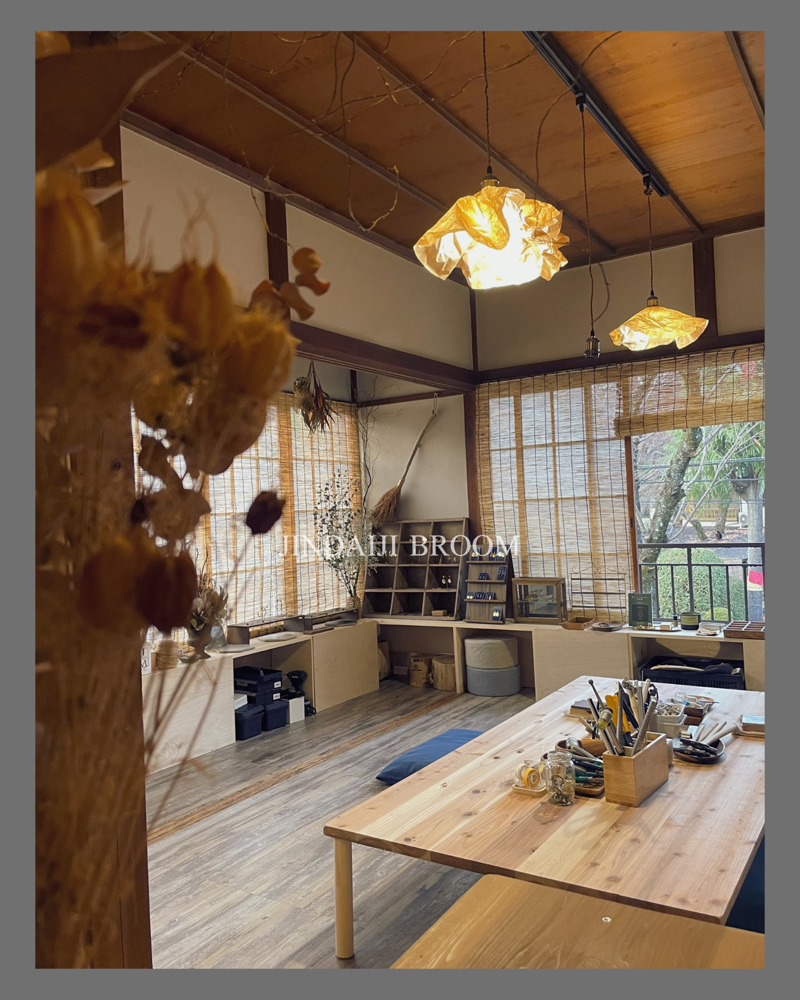
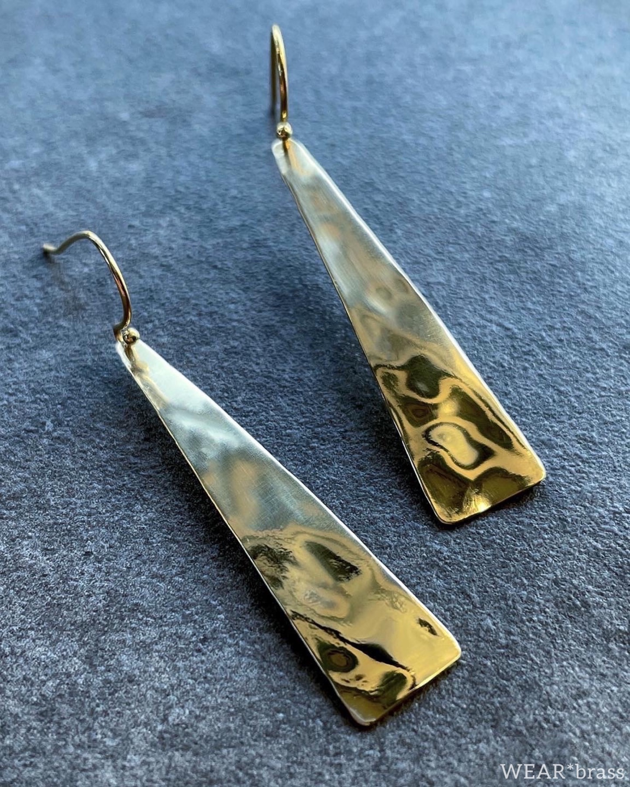
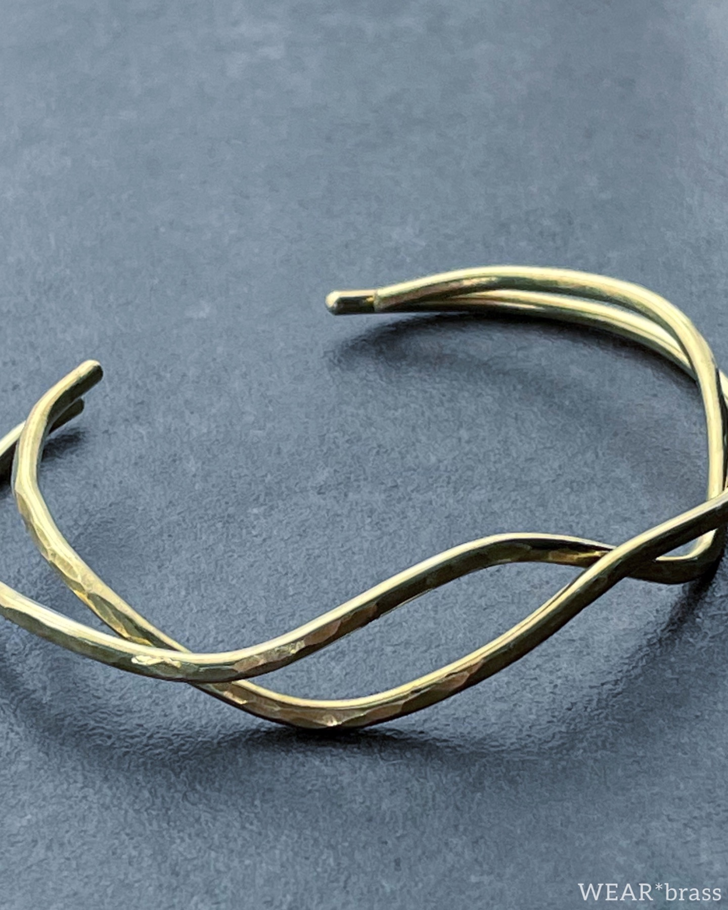
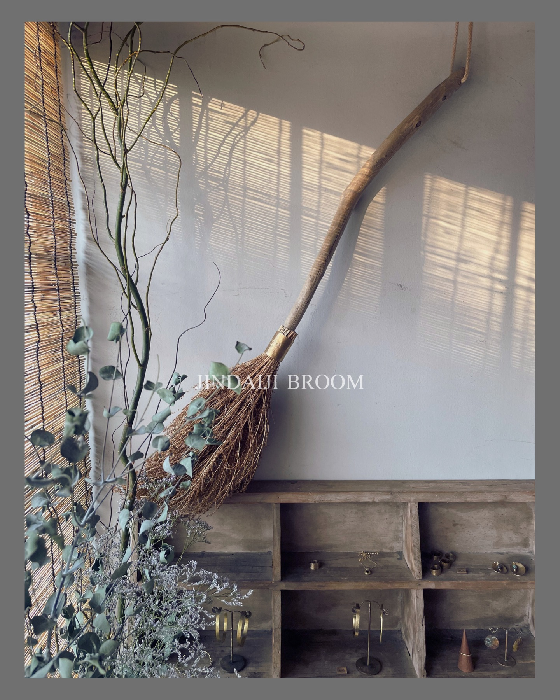
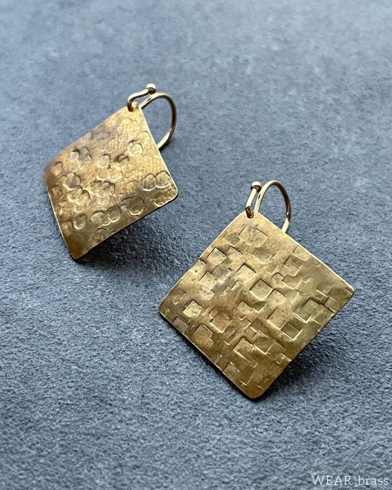
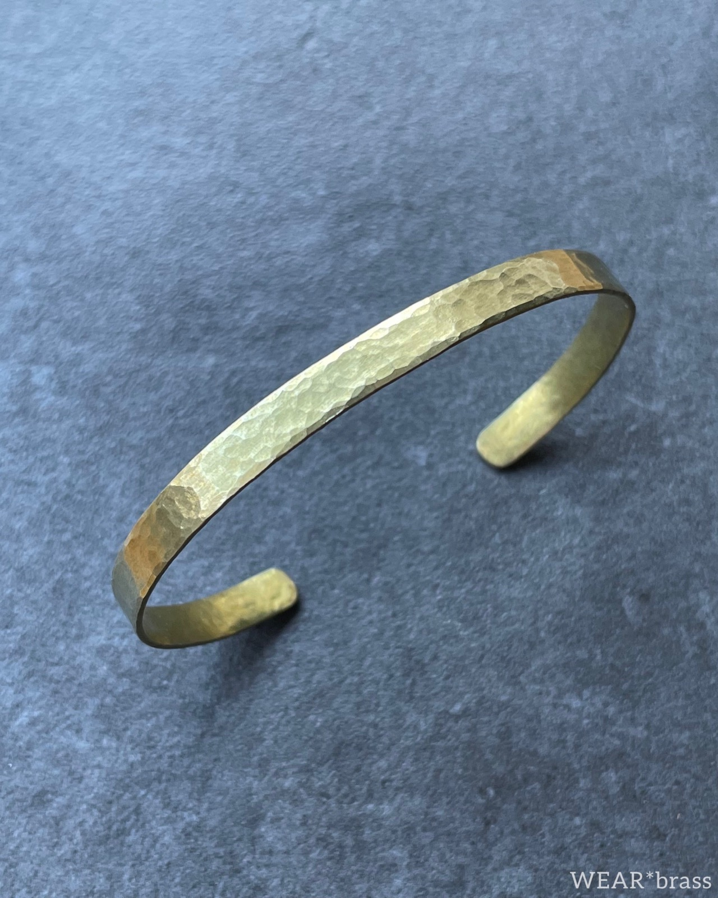
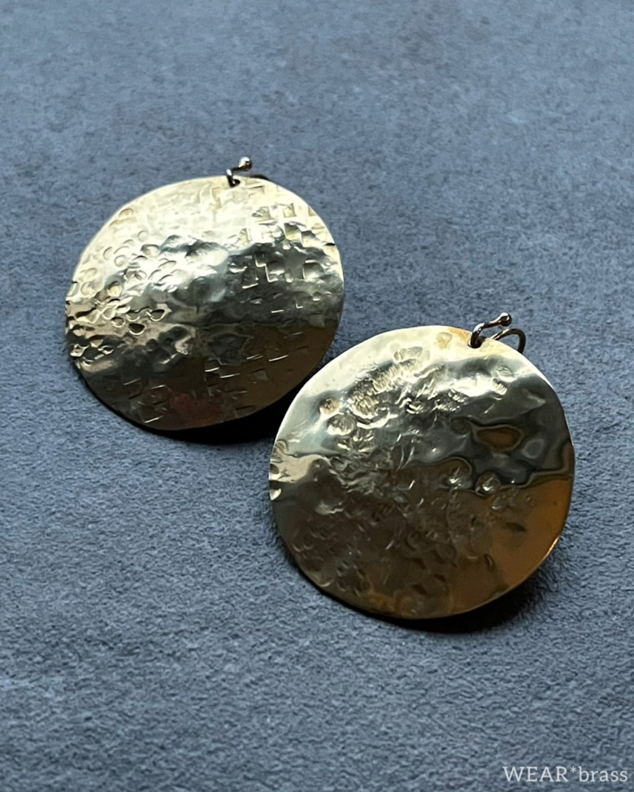
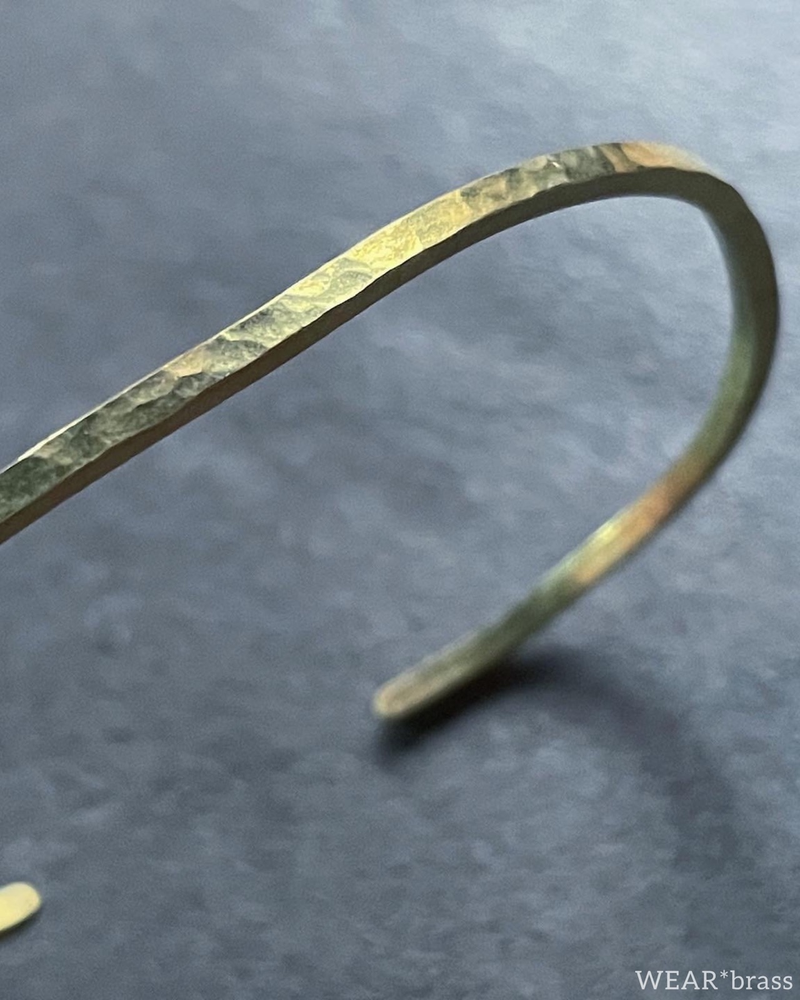
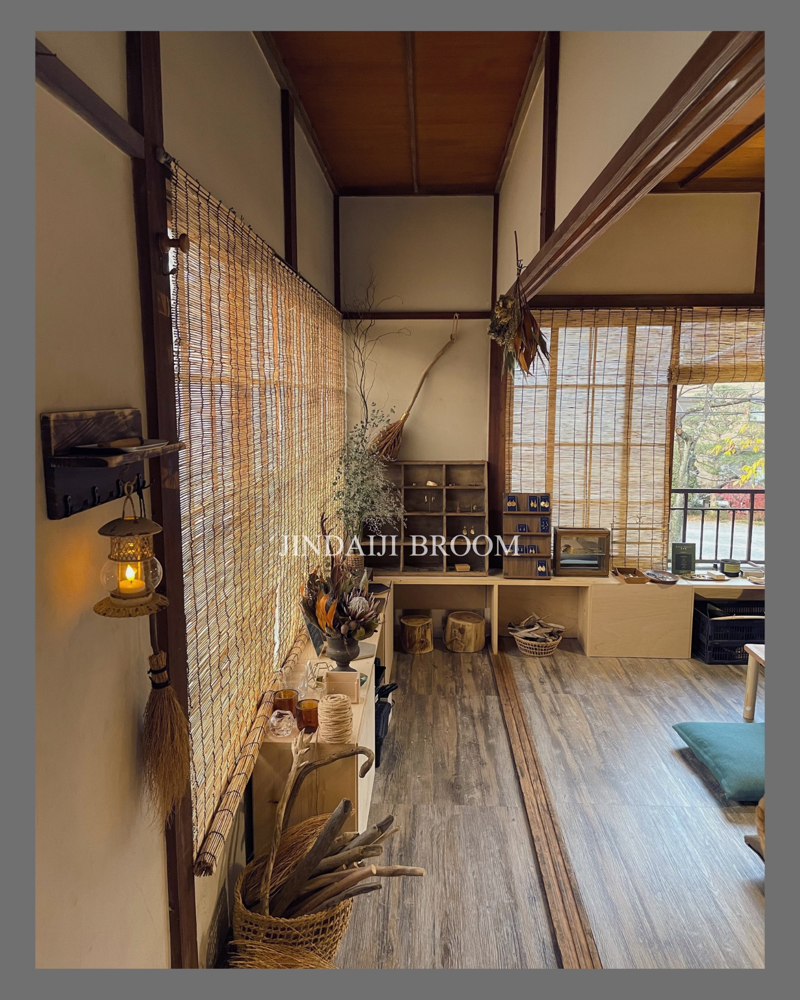
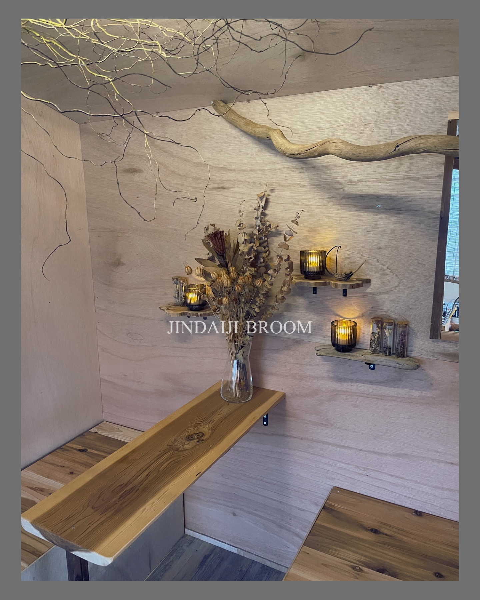

服装について
服装は自由で大丈夫です。細かな金属粉がつく場合が稀にありますので、気になる方は汚れてもよい服装、またはエプロンをご持参してお越しください。

BRASS
WORKSHOP
SMALL WORKSHOP · JINDAIJI
一枚の真鍮からアクセサリーをつくる、不定期開催の小さな制作体験。はじめての方も、手ぶらでご参加いただけます。
01
ABOUT THE WORKSHOP
金槌で模様を入れたり、形を整えたり、磨いたり。ピアス・イヤリング・バングル・ネックレスの中から、当日お好きなものを2つ選んで制作していただけます。自分用にはもちろん、大切な方へのプレゼントにも。はじめての方にも楽しんでいただけるよう、真鍮作家しろめが一つずつお手伝いします。







まずは作りたいものを相談しながら、ピアス・イヤリング・バングル・ネックレスの中から当日2点を選びます。
道具の使い方をご案内しながら、金槌で模様を入れ、形を整え、少しずつ磨いて仕上げていきます。
最後に金具を合わせて完成。できあがった作品はその日にお持ち帰りいただけます。
ATELIER MOVIE
真鍮の光、手を動かす音、木の温もりが残るアトリエ。深大寺のゆったりした空気も含めて、当日の雰囲気を短い動画でご覧いただけます。
INFORMATION
BEFORE YOU COME
服装は自由で大丈夫です。細かな金属粉がつく場合が稀にありますので、気になる方は汚れてもよい服装、またはエプロンをご持参してお越しください。
参加費は当日、現金にてお支払いください。
バスの遅延などで開始時間に遅れそうな場合は、わかった時点でInstagramのDMからお気軽にご連絡ください。
真鍮を使ったアクセサリー制作です。ピアス金具はステンレス・チタン・14kgfへ変更できます（追加料金＋500円）。
深大寺バス停からアトリエまでの道順
ACCESS
迷われた際は、お気軽にDMください。道順はInstagramのハイライトからもご確認いただけます。
RESERVATION
所要時間は約2〜3時間。少人数でゆっくり進めます。
JINDAIJI WALK
アトリエのある深大寺周辺は、都内にいながら少し遠くへ来たような空気があります。真鍮を叩く時間の前後に、参道を歩いたり、おそばを食べたり、植物公園まで足をのばしたり。半日だけの小さなおでかけとして楽しめます。
JINDAIJI MAP
深大寺周辺をゆっくり歩きたい方には、深大寺公式の探索マップもおすすめです。深大寺やお蕎麦屋さん、神代植物公園、植物多様性センター、水生植物園など、近くの見どころを地図上で確認できます。スマートフォンでは現在地を見ながら散策できるので、制作の前後に少し寄り道したいときにも便利です。
SAMPLE PLAN
緑と水の気配がある境内へ。制作前に少し歩くだけでも、気持ちがすっと整います。
深大寺公式サイト ↗周辺にはおそば屋さんや甘味のお店が点在しています。ワークショップ前の腹ごしらえにも、帰り道の余韻にも。
深大寺そば組合 ↗季節の花や大温室を眺めながら、作品づくりのあとにゆっくり散歩。写真を撮りながら歩くのもおすすめです。
神代植物公園 ↗もう少し旅気分を味わうなら、深大寺天然温泉「湯守の里」へ。黒みがかったお湯に浸かって、手仕事の余韻をゆっくりほどけます。
湯守の里 ↗深大寺周辺は閉門・閉店が早めのお店もあります。温泉や寄り道を楽しむ場合は、当日の営業時間をご確認ください。
HANDMADE ATELIER
JINDAIJI BROOMは、古い空間に手を入れながら、しろめが一人でDIYして整えた小さなアトリエです。木の棚や枝、灯り、ほうきの目印まで、少しずつ手を動かしてできた場所。真鍮を叩く時間も、この空間ごと楽しんでいただけたらうれしいです。


FOR FUTURE MAKERS
制作技術からブランドづくりまで学ぶ「WEAR*brass工作室」は、こちらの体験とは別のオンライン講座です。
FOLLOW US
作品の雰囲気、ワークショップのお知らせ、深大寺のアトリエでの小さな出来事を更新しています。
Instagramを見る @wearbrass ↗